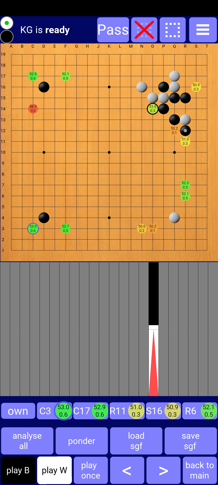
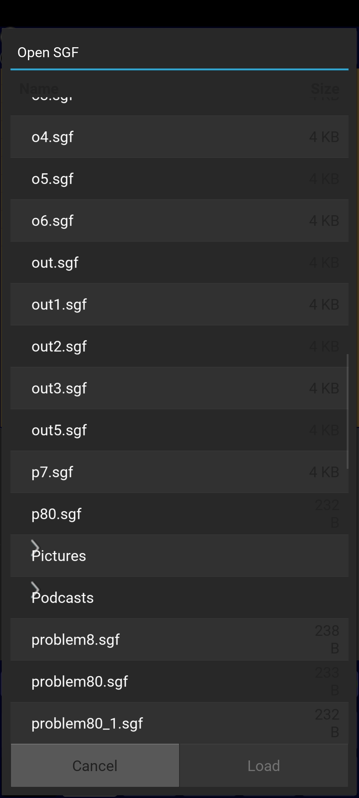

This app allows you to play and analyse go/baduk/weiqi with two very strong AIs:
1) Katago: To my knowledge the first native implementation on android. You can choose between a 10 blocks network (the latest one from extended training) and a 20 blocks network (from version 1.5.0). Moreover you can load a network from your device storage. The 10 blocks network runs on CPU. The 20 blocks network is optimized for android and will use HW acceleration if possible. On Snapdragon 855+ processor for example KataGo does about 80 n/s (for 10 blocks) and 55 n/s (for 20 blocks).
2) LeelaZero: You can choose between a 15 blocks network (trained against 40b self-play) and a 40 blocks network (LZ 286). The implementation is optimized for android and can use HW acceleration on recent Snapdragon chipsets so will be quite fast on such devices. On Snapdragon 855+ for example it does about 200 n/s (for 15 blocks) and 50 n/s (for 40 blocks) which is six times faster than the previously available cpu-based versions.
You can either install it from google play store or you can download 64 bit APK and install it (make sure that installation of thirdparty-apps is allowed in settings). If this APK is not compatible with your device, download 32 bit APK and install it.
 
The UI is an extension of Alexander Taylor's excellent app "LazyBaduk" (with kind permission from him). Most of it is self-explanatory but some hints may be helpful:
The two bullets in the top-left corner indicate whose turn it is. You can switch this by tapping on the bullets.
By tapping the dashed rectangle in the top row you can restrict AI analysis to a region (which consists of a rectangle plus additional points): First a dialog pops up where you can enter the coordinates of the additional points and choose how many subsequent moves must be inside the region. Afterwards you can define the rectangle on the board by dragging from its top left corner to the bottom right one. You can cancel this analysis restriction by tapping the red cross in the top row.
The settings menu in the top right corner allows you to switch networks, engines and adjust game settings:
If KataGo is in use, it shows the name of the network currently used in the first field. If you tap on this field, a dialog opens which allows you to manage the networks: You can delete internal networks which you don't intend to use (to save storage) or you can choose a KataGo network file from your device storage. To avoid duplication, the file is not copied into the app, but read from the chosen location on subsequent starts, so please don't delete it while still in use. This feature is only available with KataGo since the LeelaZero implementation only uses optimized models which require pre-processing, so you can't just load a standard LeelaZero network.
If KataGo is active, you can edit the field "kyu-rank" in settings: If you enter a number between 30 and -8 (denoting 9-dan), a calibrated bot of roughly this strength (as in KaTrain) will make the AI moves (full credit to sanderland's great KaTrain project for the underlying algorithms). For the strength calibration to fit, you have to use the 20b network (or an external 15b network). Rank settings above 4-dan have to be taken with a grain of salt: Strength will increase but not by much, so that -8 will be a lot weaker than 9-dan. You might want to combine this bot with activating "opening book" to get a human-style fuseki.
If you enter anything else than numbers between 30 and -8 in "kyu-rank" (or nothing at all), full KataGo will be in charge of the AI moves again. Analysis (via "ponder" or "analyse all") will always be done by full KataGo.
With the checkbox "winrate on play" you can toggle whether winrates are also shown during play (not only in analysis). If ticked, the winrate will be displayed for all moves of the full AI (the calibrated bot mentioned above does not calculate winrates for his moves, so nothing is shown when he plays).
In the field labelled "histogram:" you can configure what the histogram below the board will show:
If you enter a positive number in the field "visits/move in analysis", then this number of visits will be executed on each move during analysis. Otherwise the time specified in "seconds/move" will be spent.
If you touch the board, a preview of the stone to by played will be shown. You can adjust its position by dragging your finger across the board (stone position is always 3 lines above your finger). Lifting off your finger finally places the stone. The 3-line-offset can be switched off in the settings.
If you place the new stone on an existing stone, normally nothing will happen. But if you have loaded an sgf with only set stones (i.e no moves), then the existing stone will be removed (which is useful for editing a position to analyze).
The area below the board shows a kind of winrate histogram. The area is divided into as many segments as moves have been loaded (from sgf) and/or played. By tapping on a segment you can navigate to the corresponding move, resp. position. The current position is indicated by a red triangle. If a position has been analysed by AI the (originally grey) corresponding segment is coloured black/white such that the size of the white area is proportional to white's winrate.
The histogram always shows a linear sequence of moves (there is just no space for a complete win-rated game tree). If you load an sgf (either by the button or by sharing an sgf from another app to BadukAI), the main line of the sgf will be shown. If you then enter moves manually or let the AI generate moves to explore a position, the histogram will show the sequence from game start to the last "manual" move. To return to your "branching position" and display the main line of the sgf again, tap "back to main".
Even though the histogram shows only one move sequence, the button "save sgf" will save the complete game tree (your "manual" moves become variations).
When AI analyses a position, the best moves (up to five) appear below the winrate histogram in order of quality. While you hold your finger on such a move, the primary variation following that move is displayed on the board. If you hold your finger on the first button (named "own") of the row, the ownership prediction by AI is shown by a transparent overlay on the board.
By tapping "ponder" you can make AI analyse the current position: The winrate in the histogram and the display of the best moves on the board and below the histogram will be continously updated until you stop analysis by tapping "ponder" again.
If you tap "analyse all", AI will analyse each position from the current one to the end of the sequence in the histogram (spending "seconds/move" or "visits/move in analysis" from the settings on each position). Afterwards the histogram will show all winrates so that you can detect sudden changes in the winrate (which hint at mistakes) and have a closer look at these positions.
To play handicap you can play black stone, pass, black stone, pass,... until all handicap stones are placed, then tap "play W" to let AI play white.
For KataGo you can
For LeelaZero you can
If you encounter any problems, let me know ...